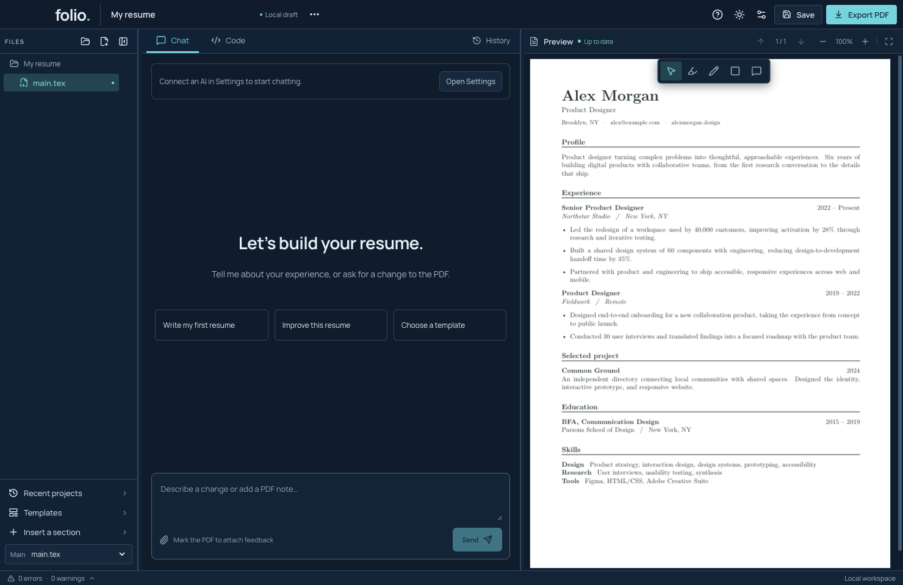
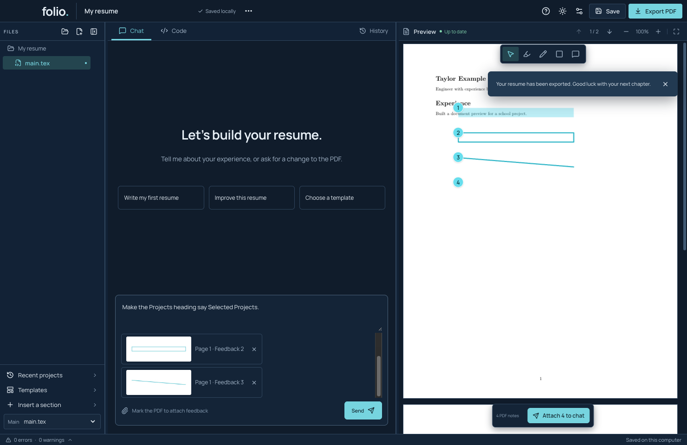
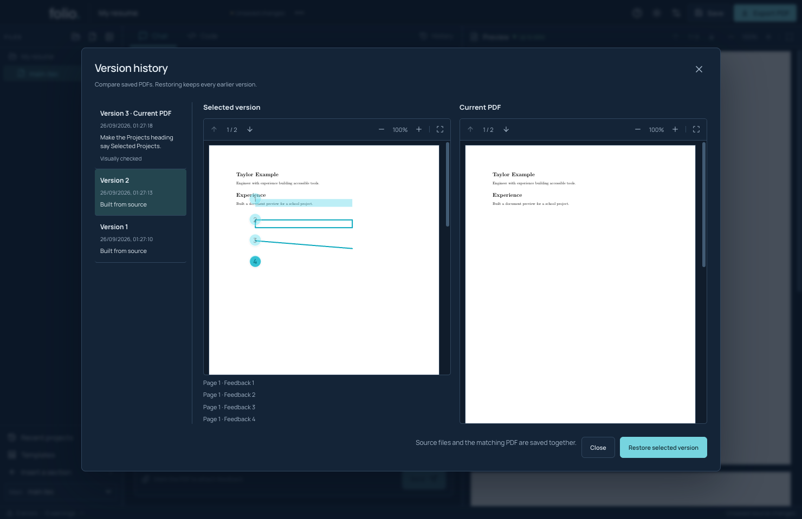
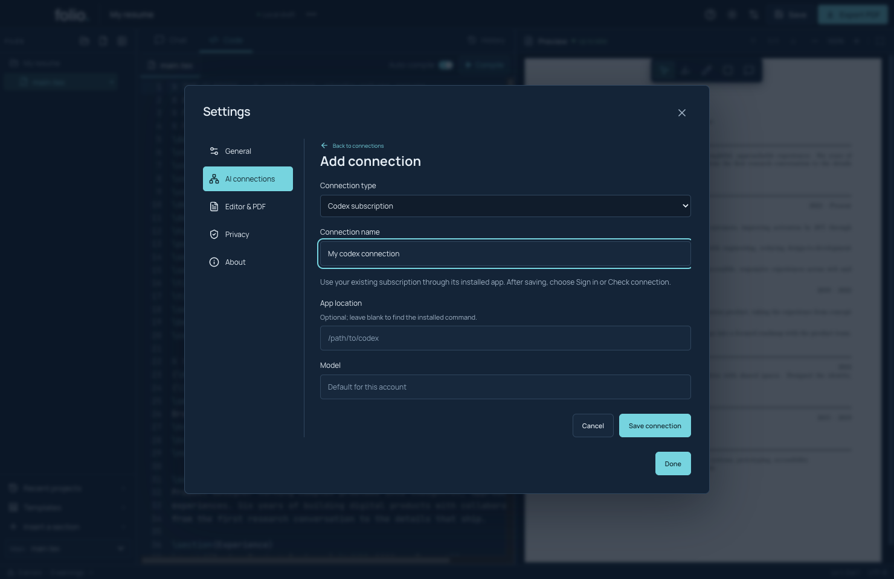

Start with your story.
Choose a template, bring an existing project, or tell your AI what you want to write. Keep the facts yours.
FOR MACS WITH APPLE SILICON · DEVELOPMENT PREVIEW
Talk through your experience. Point to what needs changing.
Turn it into a resume you’re proud to send.
Noncommercial community project. Source available now.

A SMALLER GAP BETWEEN IDEA AND PAGE
A conversation on one side. The result on the other.
Choose a template, bring an existing project, or tell your AI what you want to write. Keep the facts yours.
Highlight a sentence, draw a box, or leave a note on the PDF. Attach that spot to your next message.
The agent edits the TeX and reviews PDF images. Compare versions, make your final check, then export.
FEEDBACK, RIGHT WHERE IT BELONGS
Skip the long explanation of where something is. Your marks travel with the page number, image crop, and instructions.
Try PDF feedback
MAKE ROOM TO EXPERIMENT
Compare the old and new PDFs side by side. Restore an earlier version or undo a change. The Code tab keeps the source within reach.
Explore version history
A THOUGHTFUL STARTING POINT
A4 or US Letter. Real PDF previews.
Bundled fonts, ready to build locally.
YOUR AI. ONE QUIET PLACE FOR SETTINGS.
Use an installed Codex or Claude Code connection, bring an API key, or add a compatible endpoint. Set it up and select it in Settings.
Account eligibility and image support depend on your provider. API use is billed by that provider. Live Claude and BYOK acceptance is still being verified.
Set up a connection
GOOD TO KNOW
TeX builds on your Mac. Projects, notes, and history are saved locally. Sending a chat shares relevant source and PDF images with your chosen AI provider.
Keep editable TeX files, export a source ZIP, or send a PDF without feedback marks. Source ZIPs include conversation history; review before sharing.
Source is available today. Signing, notarization, automatic updates, and wider Mac testing are still in progress. Read the release status before installing.
YOUR NEXT CHAPTER STARTS HERE